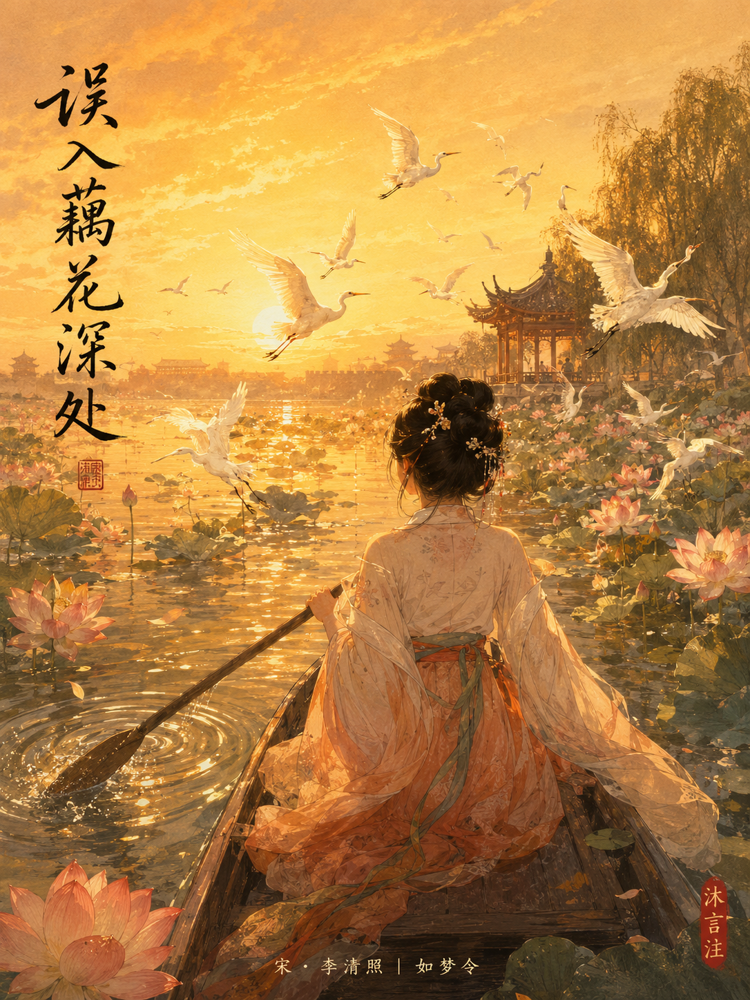

宋朝版图 · 词踪
北宋政和元年（1111年）疆域 · 标注李清照两首词的地理位置


在122篇古诗文中，李清照出现了2次。今天是第1次。
这首《如梦令》是122首里极少数"写快乐"的词——它不写离别、不写战场、不写失意，只写一个少女划船忘了回家。司马迁会说：这首词写于她人生的极盛期，那时她16岁，汴京还在，天下还没塌，她连"失去"是什么都不知道。
第2次遇到她，是《渔家傲·天接云涛连晓雾》，47岁，写于南渡流亡中。庄子会说：16岁到47岁，这31年间她经历了一个王朝的覆灭、一个家庭的天翻地覆——个人命运被时代裹挟，没有人能独立于历史之外。
两首词在122首中相距很远——从第1次到第2次，中间隔了几十首其他诗人的作品。但等你下次读到《渔家傲》的时候，回头一看，会想起今天——那个划船忘了回家的小姐姐，她那时还不知道自己的人生会变成什么样。
读完"常记溪亭日暮，沉醉不知归路"，你看到的是什么颜色？
只能选一个——你最想让看画的人第一眼看到什么？
你想从什么角度来看这个故事？
闭上眼睛听——你觉得这幅画里有什么声音？
知道了她后来的故事，再回头看这幅画——